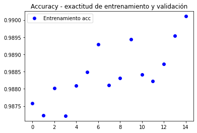

Karlo Guevara
Karlo Guevara
U-Net para segmentar
de tumores cerebrales
Implementé un modelo U-Net para segmentar tumores en imágenes de resonancia magnética (MRI) del cerebro humano, utilizando la base de datos de kaggle MRI Brain Segmentation que consta de 110 volúmenes de resonancia magnética de igual número de pacientes.
En la base de datos anterior, nos encontramos con los siguientes datos: la imagen de la izquierda es una resonancia de un paciente con un tumor, la cual será la entrada de nuestra red U-Net. Buscamos que nuestra imagen de salida tenga la estructura de la imagen de la derecha, que es una segmentación del tumor de la imagen de la izquierda.
Después de entrenar la red neuronal, obtuvimos los siguientes resultados. Las dos primeras imágenes son de la base de datos, mientras que las últimas dos son el resultado de la red neuronal.
/imagen2_de__(2_1).png)
Estas son las gráficas de la exactitud y la función de pérdida de la red neuronal U-Net a lo largo del entrenamiento.
|  |
/imagen4_de__(2_1).png)
|
El trabajo completo se encuentra en el siguiente jupyter notebook PDF.